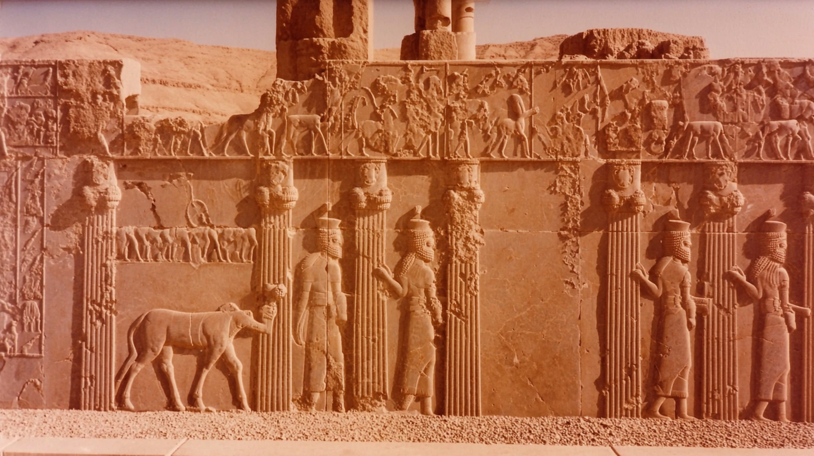
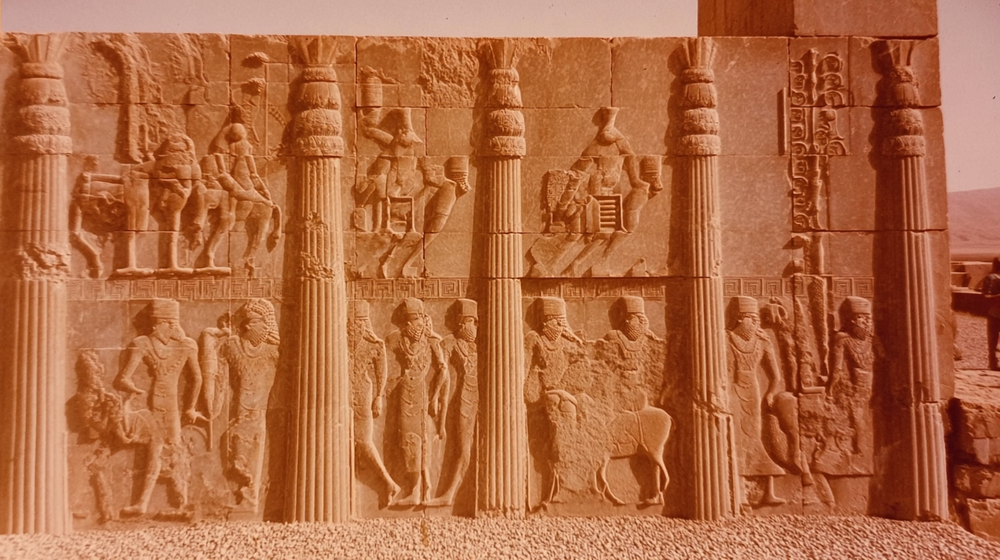
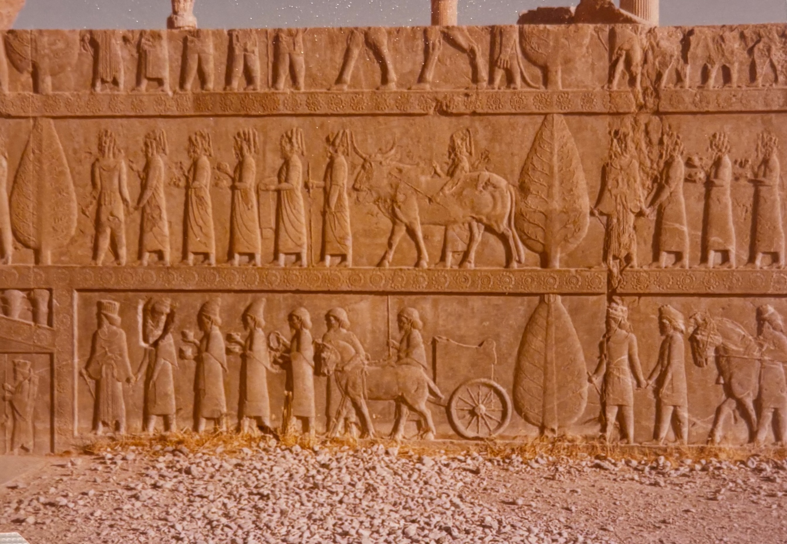
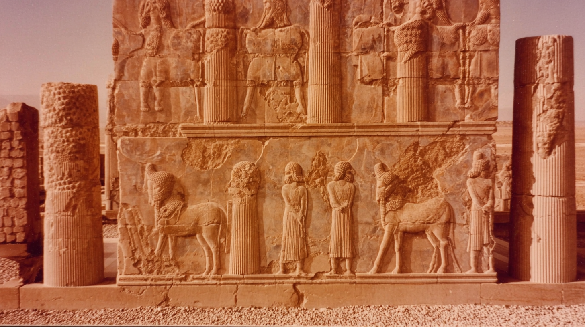
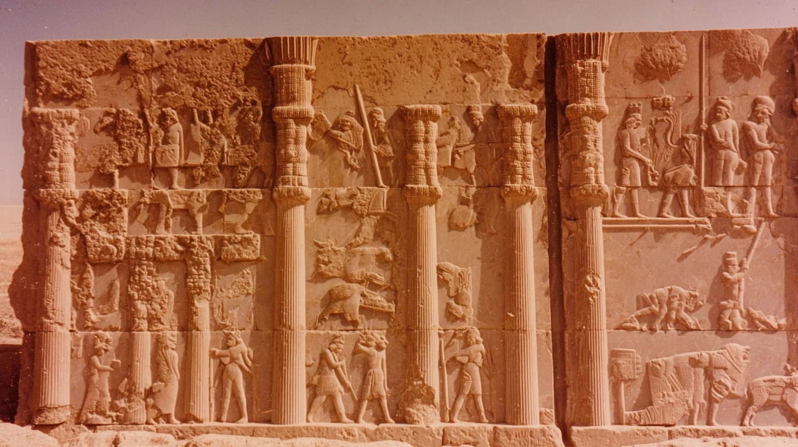

A long stone relief panel depicts carved figures, animals, and attendants in procession, the intricate details softened by warm desert light and centuries of erosion.
Tall fluted columns divide a carved wall of ancient figures and ceremonial scenes, their weathered surfaces glowing in amber tones beneath the open sky.
A lower section of the monument shows carved guardians and attendants standing beside animals, the stone textured with cracks and wear from age.
Close up of engravings on wall in Persepolis, 70's analogue photograph of Persepolis columns. sun-bleached colours, subtle dusty pink and muted ochre tones, soft film grain, heat shimmer distortion, textured details, imperfect composition, 35mm kodachrome, muted natural colours, low contrast grading, soft highlights, hazy atmosphere, arid heat.. Light film grain, dimpled texture.
organic texture, low digital sharpness, no vivid colours. Shot like contemporary cinema, realistic, alive, subtle faded blurry shutter motion